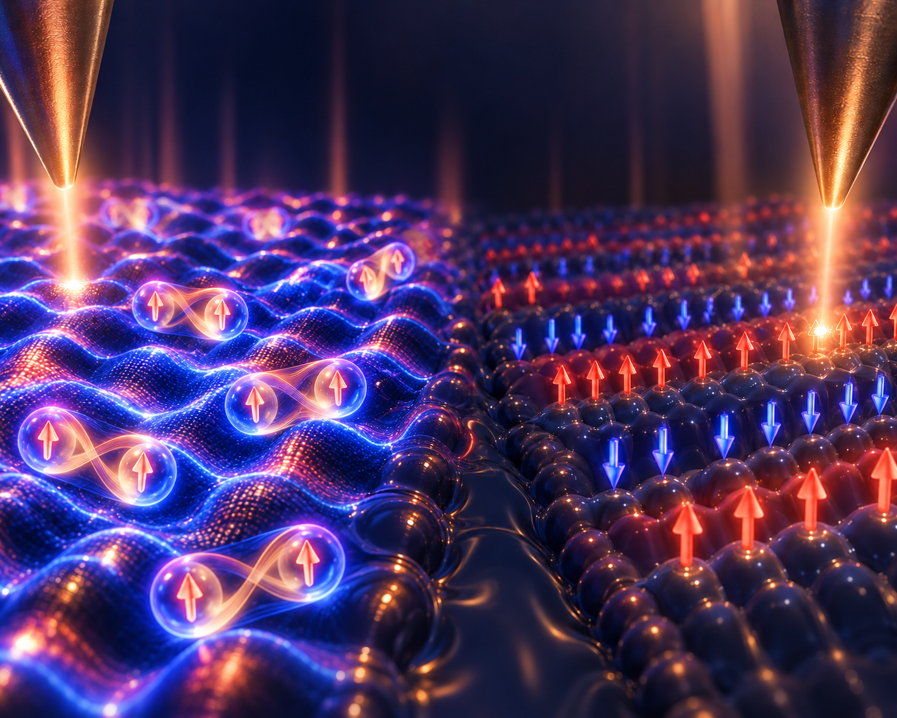
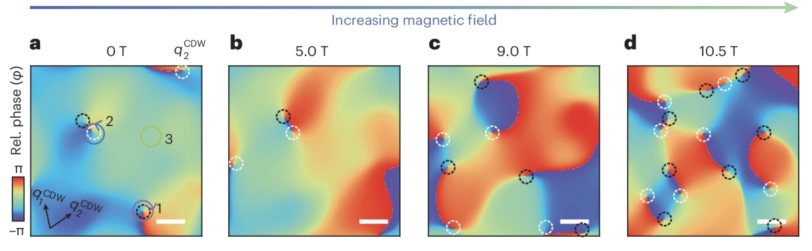
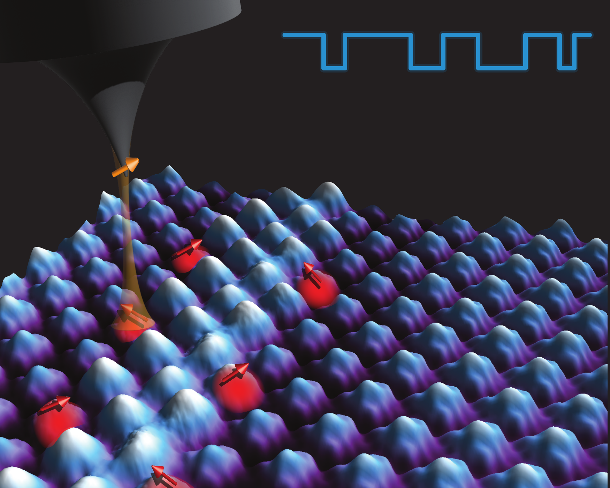
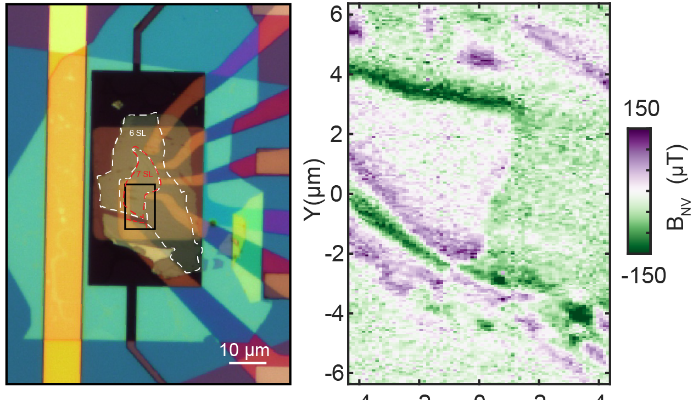

From atomic landscapes to quantum dynamics
One of the longstanding challenges in quantum materials research is to understand how collective quantum phenomena emerge from the interactions of many electrons constrained by symmetry, topology, and the underlying crystal environment. Our group develops and employs high-resolution scanning tunneling microscopy and quantum sensing with color centers in diamond to visualize these states at the atomic and nanoscale at low temperatures.
By combining complementary probes of charge and spin, we aim to uncover the microscopic mechanisms behind unconventional superconductivity, correlated charge and spin orders, and other emergent quantum states. Ultimately, our goal is not only to understand these complex materials, but also to develop new experimental tools for discovering, controlling, and harnessing quantum phenomena.
What we work on
Three threads run through the lab
Each grounded in atomic-resolution imaging rather than bulk measurements alone.
Unconventional superconductivity
Quasiparticle interference and spectroscopic imaging of superconductors like UTe₂ and Fe(Se,Te)/Bi₂Te₃ to probe their pairing symmetry.
Intertwined charge & spin orders
Visualizing charge density waves, spin excitations, and topological defects in correlated materials such as 1T-TaS₂ and GdTe₃.
Topological phenomena
Spin-resolved tunneling and spectroscopy of topological Kondo insulators and antiferromagnets, including their surface states and response to external fields.
Recent work
 2026
2026
Quasiparticle interference in triplet superconductor UTe₂
 2025
2025
Axionic tunneling from a topological Kondo insulator
 2024
2024
Melting the charge density wave in UTe₂ via paired topological defects
Interested in joining the lab?
We are building a dynamic and inclusive research group at NUS, and we are looking for curious, collaborative and motivated people. If you are interested in condensed matter physics, quantum materials and sensing, we would love to hear from you — please reach out to Prof. Aishwarya!
Get in touch